アクションキャンセルの活用
応用編
ミッション攻略における有効な要素として、アクション中のキャンセル操作により、リスクの回避やタイムロスの軽減をはかれるテクニックがあります。
以下にそれらを挙げたいと思います。
ジャンプキャンセル
空中にジャンプした後、重力に任せて着地するよりも、すぐに2ボタンを押してジャンプキャンセル操作をすることで、素早く地上に着地でき、タイムを短縮することができます。
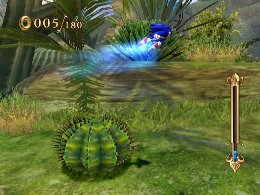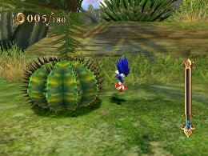
この操作は１ボタンでもできますが、若干性能が異なります。
ジャンプキャンセルは、ジャンプ開始から一定時間キャンセルを受け付けない時間が存在します。このときに１ボタンを先行入力しておくとジャンプキャンセルの受付が開始された瞬間にキャンセルを発動することが可能です。
ホーミングアタックキャンセル
マジンには「炎を吐いてくる」「体から電撃を発する（一定時間無敵状態）」など、特殊な攻撃を仕掛けてくるタイプがいます。そういったマジンにタイミングを誤ってホーミングアタックをした時に素早く2ボタンを押すことで、ホーミングアタックをキャンセルしダメージを回避することができます。
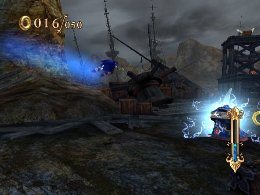
「キャンセルダッシュ」、「キャンセルアブソーバー」系のスキルを装備することで、より効果的に活用することができます
スライディングキャンセル
スライディング状態になると、本来は「スライディング⇒ジャンプ⇒着地⇒走る」というアクションの流れになりますが、スライディング状態中、1ボタンのブレーキ操作をはさむことで、「スライディング⇒走る」という流れにスムーズに移行するでき、タイムロスを防ぐことができます。
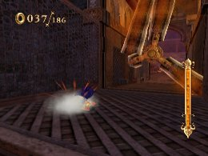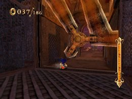
1ボタンは、ボタンをスライドさせるように軽く押すのがコツです（長押しすると止まってしまいます）
スライディングの注意点として、敵に衝突したり落ちたりしないようにマップに置かれているストッパー（ダイナソージャングルの丸太など）があります。スライディング中にストッパーに衝突してはじかれると一回スライディング状態が解除されてしまいます。タイムロスをしないためには、ストッパーに接触しない踏み切りを狙いましょう。
 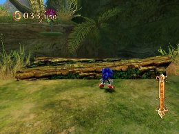
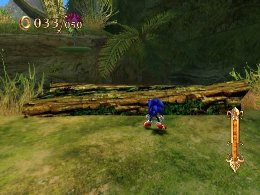
グラインドキャンセル
１ボタンを押すとブレーキが掛かり素早くグラインドを中止することができます。
グラインドレールの先にトラップがあるとき等、トリックで降りるより安全に早くグラインドをやめることができます。
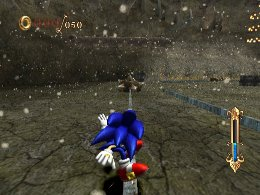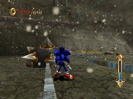
グラインドトリックキャンセル
グラインドからトリックでジャンプした後、２ボタンを押してジャンプキャンセル操作をすることで、素早く地上に着地できます。
クイックエア系のスキルを装備するとトリックの移動距離が変化するため、他のグラインドへ乗り換えるときにトリックのキャンセルが有効です。同時にタイムブレイクを使用すれば、より精度の高い乗り換えが可能になります。

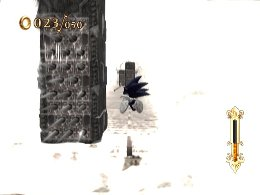

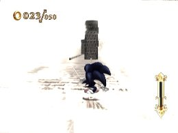
 RSS
RSS